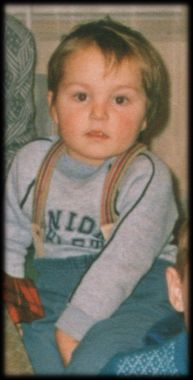

| <| O MNIE |
|
Jeśli nie masz w tej chwili nic lepszego do roboty, to możesz sobie poczytać o twórcy tej strony, czyli o mnie. Jeżeli chcesz do mnie wysłać maila, oto mój adres: jprokulewicz@poczta.onet.pl. |
|

Nazywam się Janusz Prokulewicz (ksywka: Swoosh) i aktualnie (wakacje 2003) jestem po egzaminie maturalnym oraz po egzaminac wstępnych na uczelnie. Los chciał, że wylądowałem na Politechnice Krakowskiej, wydzial Inżynierii Elektrycznej i Komputerowej, kierunek Elektrotechnika. Porażka nieprzeciętna, ale w ciągu roku postaram się to zmienić na Informatykę. Póki co mieszkam w Strzyżowie, pięknym miasteczku położonym na południu Polski, w województwie podkarpackim. Tworzeniem stron zainteresowałem się pod koniec 1999 roku, kiedy to w ręce wpadła mi książka pt."HTML Goodies - Rodzynki języka HTML", autorstwa Joe Burnsa (gorąco polecam!). Przeczytałem ją już po kilku dniach i wtedy właśnie powstała pierwsza wersja mojej pierwszej witryny, traktującej o polskiej grze strategicznej Polanie. Oczywiście jeśli to "coś" możnaby nazwać witryną. Właściwie był to kącik w formie witryny internetowej, bo o opublikowaniu tego w internecie nawet nie myślałem. Przez następne dwa miesiące uzupełniałem ją o dodatkowe informacje. Po zakończeniu prac zapomniałem o całej sprawie, a witryna zalegała gdzieś na dysku. Dopiero w grudniu 2000 roku, za namową znajomego, postanowiłem wrzucić ją na serwer. Na początku nie działo się nic nadzwyczajnego. Dopiero po jakimś czasie zacząłem otrzymywać e-maile od gości mojej strony. Poznałem kilka fajnych osób, z którymi kontaktuje się do dziś. Zainstalowałem sobie także licznik, by móc śledzić "wzięcie" mojej strony. Przez pierwszy miesiąc było to około 50 odwiedzin (w tym 20 moich ;)), później coraz lepiej (około 300). W najlepszym okresie przekroczyłem magiczną liczbę "500" odwiedzin. Później zabrakło mi troszkę samozaparcia do wprowadzania zmian, co doprowadziło do "lekkiego" zastoju. I tak było do września 2001 roku (licznik wtedy przekroczył pułap trzech tysięcy). Zmobilizowany wieścią o rozpoczęciu prac nad sequelem Polan, postanowiłem zabrać się do tworzenia nowej wersji witryny. Przygotowałem ją specjalnie pod nowe materiały, które w ciągu szkolnego starałem się wrzucać na stronę. Początkowo nastawiałem się głównie na wrzucanie materiałów poświęconych najnowszej części Polan, ale później zmieniłem zdanie. W międzyczasie zacząłem pogrywać w pierwszą część Warcrafta, wyłącznie w celach porównawczych. Nie od dziś bowiem wiadomo, że Polanie zyskały sobie miano "polskiego Warcrafta". Chciałem po prostu spradzić ile w tym prawdy. Warcraft spodobał mi się do tego stopnia, że postanowiłem stworzyć poświęcony mu dział na mojej stronie. Było to na wakacjach w 2002 roku. Pomysł ewoluował. Z działu w obszerny dział, a z obszernego działu - w samodzielną witrynę internetową. Pod koniec wakacji stworzyłem podstawowy wystrój graficzny stronki i opracowałem pierwsze materiały. W roku szkolnym musiałem się wziąć sotro za naukę, gdyż miałem przed sobą maturę. Strona o Warcrafcie musiała więc poczekać, a i tak czasem udawało mi się coś wrzucić na serwis o Polanach. W maju zdałem maturę (zupełnie dobrze zresztą), w czerwcu próbowałem zdać egzaminy na uczelnie (tym razem poszło nieco gorzej). Przyszły w końcu tak upragnione wakacje i mogłem wziąć się ostro do pracy. Zrealizowałem kilka nowych pomysłów, których realizacja wcześniej nie przyszła mi do głowy i, w stanie surowym, wrzuciłem stronkę na serwer. I tutaj, jak narazie, kończy się historia moja i mojej strony. Co do programów, jakich używam do robienia tej witryny, to są to: EditPad (ostatnio zmieniłem na EditPad 2) oraz Paint Shop Pro 6. Pomocniczo posługuję się także programami ACDSee, WinZip oraz Windows Commander (FTP). Wszystko to pod Windows 98 SE, choć bardzo możliwe, że już niedługo przerzucę się na inny system. Poza tworzeniem stron, interesuję się ogólnie grami, choć już nie w takim stopniu jak 3 czy 4 lata temu. Oprócz wszystkich części Polan cenię sobie także takie tytuły jak: Diablo, Doom, Quake II, Command & Conquer, seria Heroes of Might & Magic, oczywiście Warcraft, oraz, ogólnie rzecz biorąc, starocie wszelkiego typu. Wśród czasopism czytam (lub czytałem): PC GAMER (rulez!), Input Output(rulez nr 2), Top Secret, Secret Service, Reset, Gry Komputerowe, Świat Gier Komputerowych oraz CD-Action. Wiem, wiem... Trochę tego było, ale tak to właśnie jest jak się ma "lekkiego" bzika. Mój sprzęt jest całkiem przeciętny, a i tak ostatnio dokonałem pierwszego od dłuższego czasu większego upgrade'u. Na dzień dzisiejszy używam komputera o następującej konfiguracji: PIII 500, 256 MB RAM, grafika ASUS V3400TNT z TV-OUT'em (16 MB), muzyka SB Live Player 5.1, HDD 40 GB, nagrywarka LG 16x10x40x, CD-ROM LG 4x, modem Microcom InPorte 56k Voice, drukarka HP 840C. Jeszcze niedawno używałem na codzień P200MMX. Był on o tyle lepszy, że bez problemów mogłem na nim odpalić wszystkie wersje Polan. :-) Teraz planuję go reaktywować w celu prac nad... ale to taka mała tajemnica, ale nie wiem właściwie czy wszystko dobrze pójdzie, dlatego wolę nie zapeszać. Posiadam także dwie Atarynki (800xl oraz 65xe). Pierwszą z nich dostałem (a raczej mój starszy brat) w 1988 roku, drugą zaś kupiliśmy kilka lat później (już ze stacją dysków). Na codzień z nich nie korzystam, ale co jakiś czas lubię sobie przypomnieć dawne dzieje. Najmilej wspominan takie gry jak Montezuma's Revenge, Zorro, Fred czy Joust. Pamięta może ktoś jak nazywa się gra, w której musieliśmy gasić lampki umieszczone na podłodze przechodząc po nich? Tą grę też bardzo polubiłem. Słucham dużo muzyki. Głównie Mettalicę, Quenn oraz wybrane płyty innych wykonawców (Lake of Tears, Disturbed, Nightwish, Godsmack i takie tam). Generalnie w tym temacie szerokim łukiem omijam wszystko co polskie, poza Kazikiem (lub Kultem - jak kto woli). Moja ulubiona stacja radiowa to "Trójka", telewizji prawie nie oglądam. Staram się jak najczęściej jeździć na rowerze, który w chwili obecnej przechozi remont generalny. Trochę czytam (książki przygodowe, Tolkien). Rodzeństwo mam, sztuk trzy. Pozdrawiam szczególnie młodszą siostrę Amandę, która bardzo pomogła przy prepiywaniu tekstów na tą stronę. Jeżeli chodzi o korespondowanie z kimś, jestem chętny. Bez względu na wiek czy płeć drugiej osoby. Dostępny jestem pod adresem jprokulewicz@poczta.onet.pl. Na wysłane mi wiadomości odpowiadam ZAWSZE. No, chyba że z przyczyn ode mnie niezależnych nie będzie to możliwe (na przykład gdy ktoś zwędzi mi hasło i usunie wszystkie wiadomości ze skrzynki - pozdrowienia dla MK :-P ). Pozdrawiam wszystkich gości mojej witryny, a w szczególności tych, którzy wysłali mi choćby jednego e-maila lub zostawili po sobie ślad wpisując się na Forum lub do Księi Gości. Jeżeli doczytaliście do tego momentu, to gratuluję! Chyba jednak wystarczy już tej prywaty. Wymarsz mi stąd do pozostałych działów. Ale już! :) |